"Muzica însuflețește universul, dă aripi minții, zbor imaginației și viață tuturor. – Platon"
Muzica este una dintre cele mai importante forme de exprimare artistică din lume. Ea există de mii de ani și face parte din viața oamenilor din toate culturile. Muzica poate transmite emoții, idei și povești fără a folosi neapărat cuvinte. Prin ritm, melodie și armonie, oamenii își pot exprima stările și experiențele. Pentru mulți oameni, muzica este mai mult decât divertisment. Ea poate ajuta la relaxare, concentrare sau chiar la exprimarea sentimentelor care sunt greu de spus în cuvinte. De asemenea, muzica are un rol important în diferite evenimente din viața noastră, cum ar fi sărbătorile, festivalurile sau momentele speciale. Există foarte multe genuri muzicale, fiecare având stilul, ritmul și publicul său. Unele dintre cele mai populare genuri din prezent sunt pop, EDM și jazz. Aceste stiluri sunt ascultate de milioane de oameni din întreaga lume și continuă să evolueze odată cu tehnologia și cultura modernă. În acest site voi prezenta aceste trei genuri muzicale, caracteristicile lor principale și influența lor asupra muzicii contemporane.
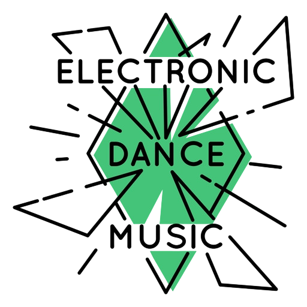
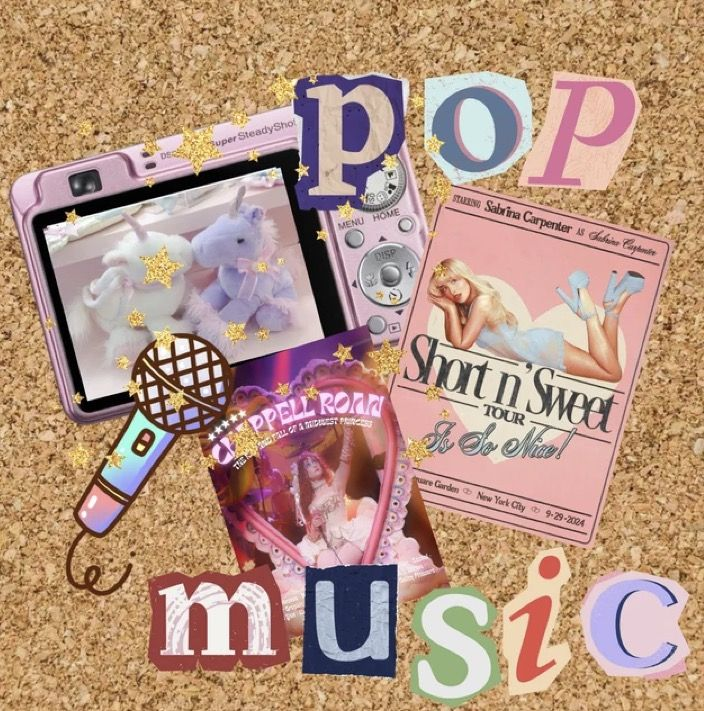
Muzica pop este unul dintre cele mai populare genuri muzicale din lume, fiind apreciată de oameni de toate vârstele. Denumirea „pop” provine de la cuvântul „popular”, ceea ce reflectă scopul acestui stil: de a fi accesibil și ușor de înțeles pentru un public larg. Acest gen muzical se caracterizează prin melodii simple, ritmuri plăcute și refrene memorabile. Piesele pop sunt de obicei structurate într-un mod clar, cu strofe și refren, ceea ce le face ușor de urmărit și de reținut. Temele abordate sunt variate, dar cel mai des întâlnite sunt iubirea, relațiile, emoțiile și experiențele de viață. Un alt aspect important al muzicii pop este faptul că se adaptează constant la tendințele actuale. De-a lungul timpului, pop-ul a împrumutat elemente din alte genuri, precum rock, dance, hip-hop sau muzică electronică, ceea ce îl face foarte divers și mereu în schimbare. Industria muzicală modernă este puternic influențată de muzica pop, deoarece acest gen domină topurile și platformele de streaming. Artiștii pop au adesea un impact major asupra culturii populare, influențând moda, stilul de viață și chiar limbajul tinerilor. Muzica pop este un gen dinamic și accesibil, care continuă să evolueze și să fie una dintre principalele forme de divertisment la nivel global. Vezi mai mult...
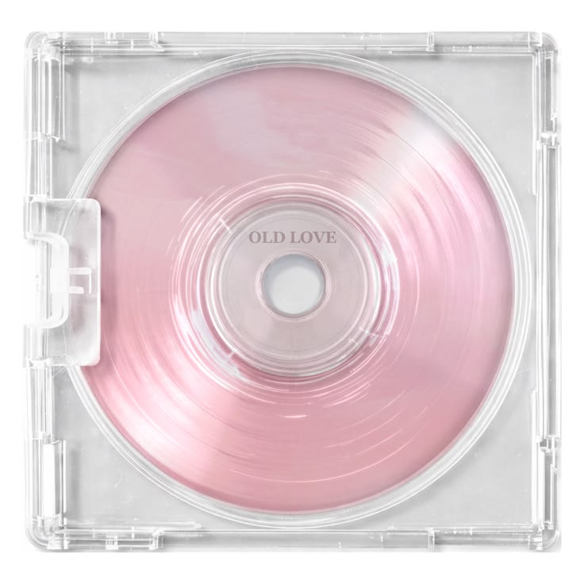
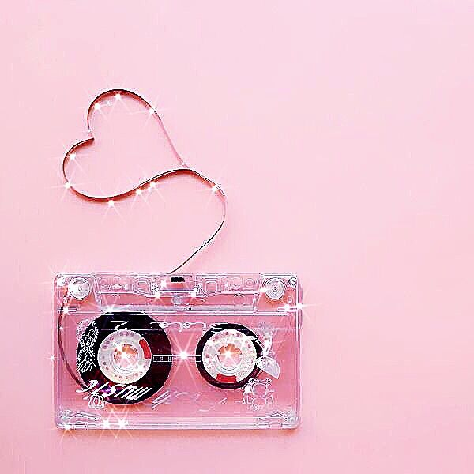
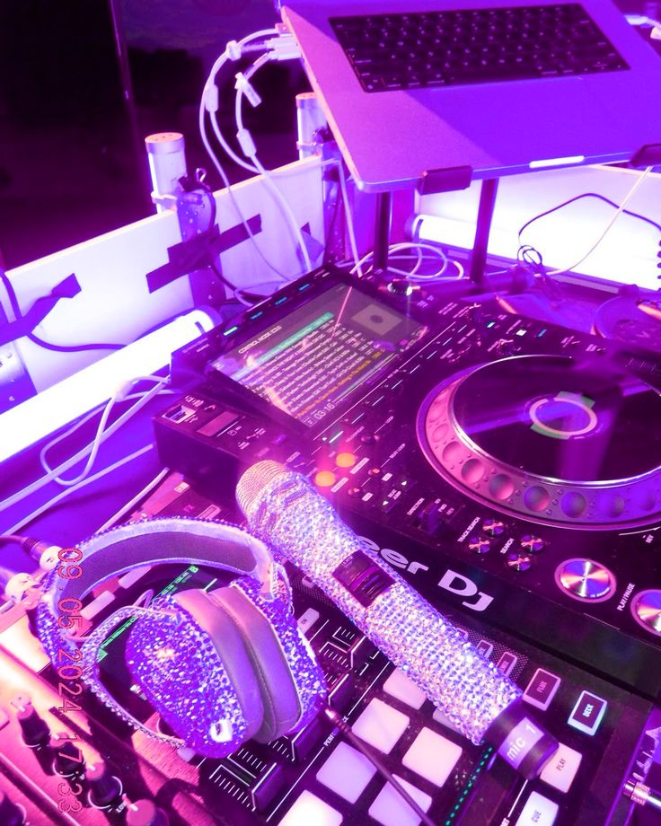
EDM, sau Electronic Dance Music, este un gen muzical modern care se bazează pe utilizarea tehnologiei pentru a crea și produce sunete. Acest stil a devenit extrem de popular în ultimele decenii, în special în rândul tinerilor și în cadrul festivalurilor de muzică. Muzica EDM se caracterizează prin beat-uri puternice, ritmuri repetitive și efecte sonore create digital. Producătorii folosesc programe speciale pe calculator pentru a combina diferite sunete și pentru a crea piese energice, potrivite pentru dans. De multe ori, piesele EDM includ „drop-uri”, momente în care muzica devine mai intensă și creează un impact puternic asupra ascultătorilor. Un element esențial al acestui gen este atmosfera pe care o creează. EDM este strâns legat de cluburi, petreceri și festivaluri, unde muzica este însoțită de lumini, efecte vizuale și o energie colectivă puternică. Experiența live este foarte importantă pentru acest stil muzical. De-a lungul timpului, EDM s-a diversificat în mai multe subgenuri, precum house, techno, dubstep sau trance, fiecare având propriile caracteristici și stiluri de ritm. În prezent, EDM este unul dintre cele mai influente genuri muzicale la nivel global, fiind ascultat de milioane de oameni și contribuind la dezvoltarea muzicii moderne prin utilizarea tehnologiei și a inovației. Vezi mai mult...
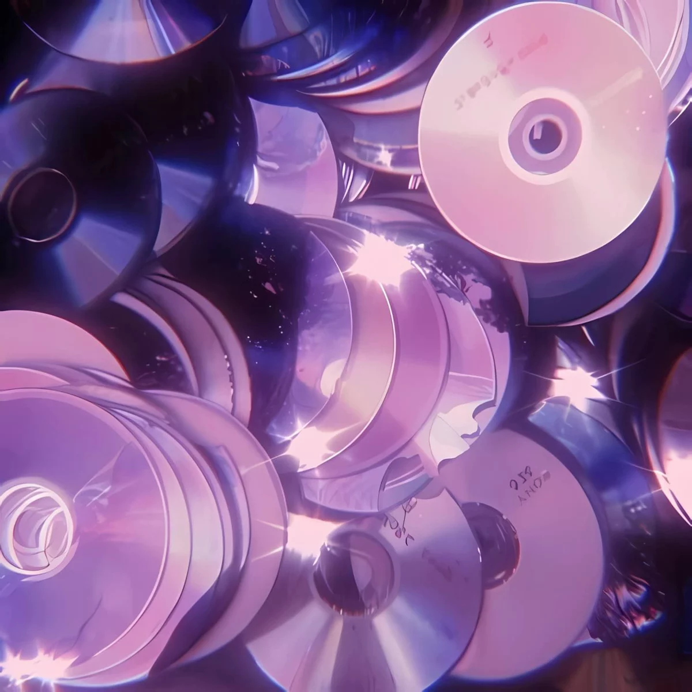
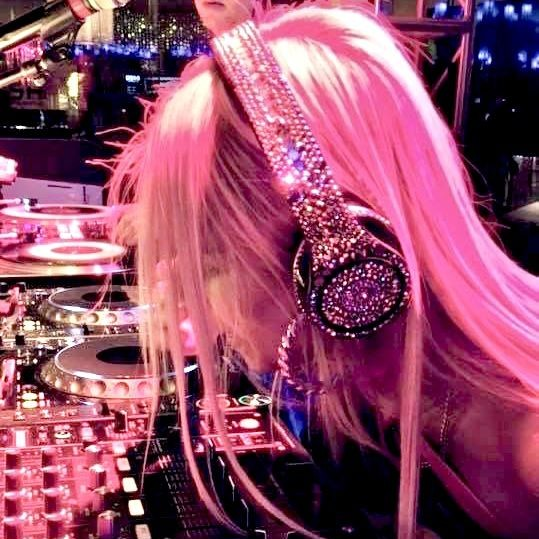
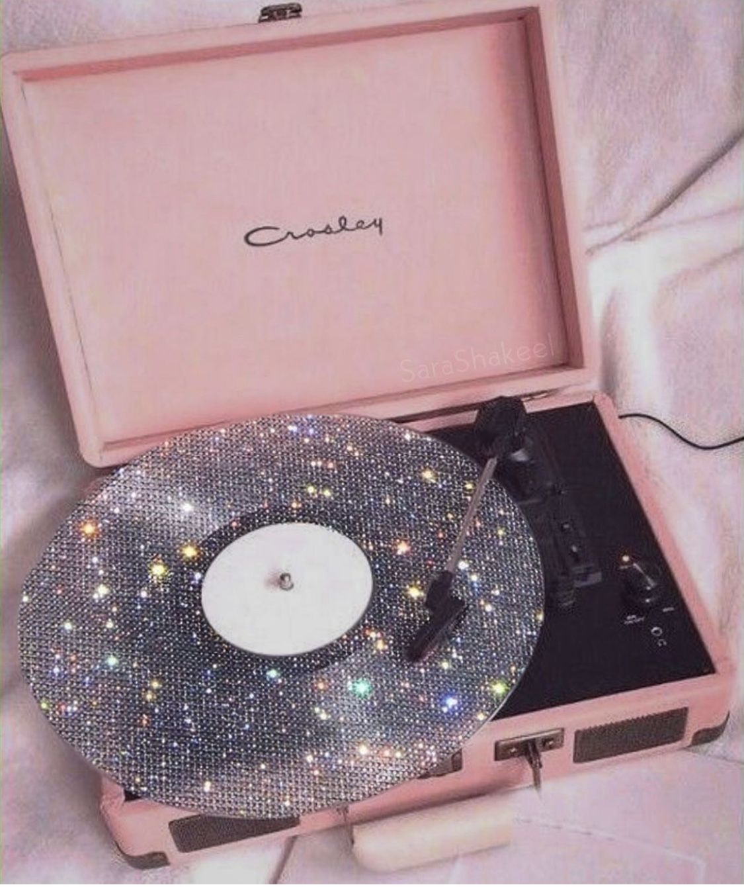
Jazzul este un gen muzical care a apărut la începutul secolului XX în Statele Unite ale Americii, având rădăcini în cultura afro-americană. Acest stil muzical este cunoscut pentru libertatea de exprimare și pentru faptul că pune accent pe creativitate și improvizație. Una dintre cele mai importante caracteristici ale jazzului este improvizația. Spre deosebire de alte genuri muzicale, unde melodiile sunt interpretate exact așa cum au fost compuse, în jazz artiștii își creează propriile variații în timpul interpretării. Astfel, fiecare interpretare poate fi diferită și unică. Jazzul se remarcă și prin ritmurile sale complexe și utilizarea unor instrumente precum pianul, saxofonul, trompeta și contrabasul. De-a lungul timpului, acest gen a evoluat și a dat naștere mai multor stiluri, cum ar fi swing, bebop sau jazz modern. Pe lângă aspectul muzical, jazzul este considerat și o formă de artă care reflectă emoțiile și experiențele oamenilor. Este un gen care încurajează libertatea artistică și colaborarea între muzicieni. Astăzi, jazzul este apreciat în întreaga lume și continuă să influențeze alte genuri muzicale, fiind o parte importantă a patrimoniului cultural global. Vezi mai mult...
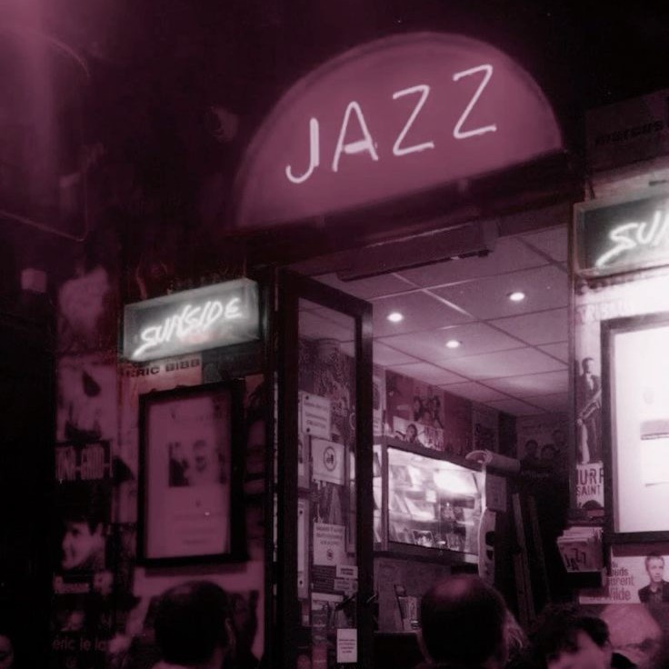
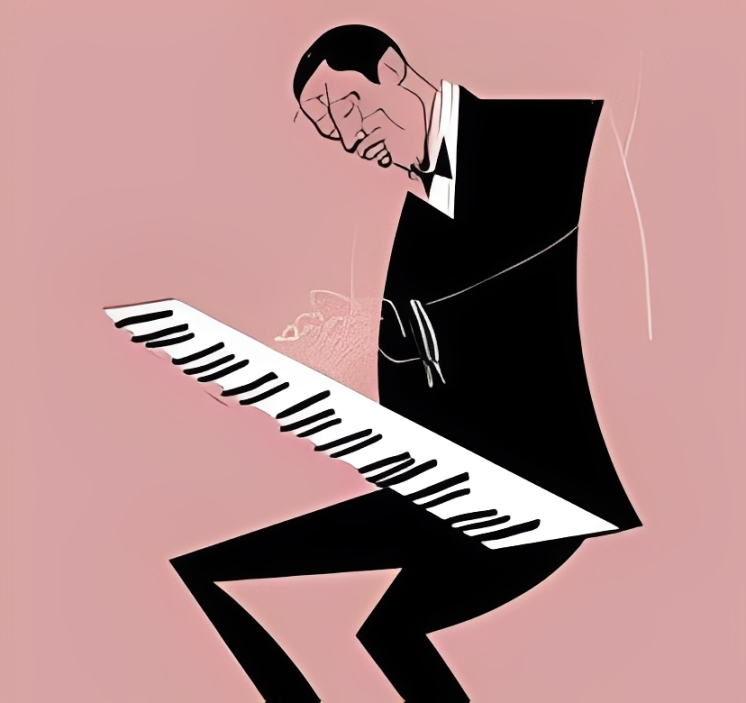
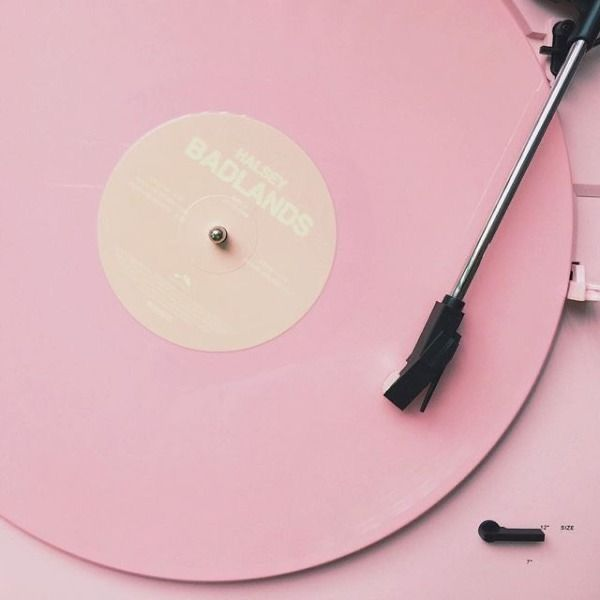
Telefon: 022 223 205
Gmail: musicforall@gmail.com
Pentru mai multe detalii despre trupe, dați click aici.